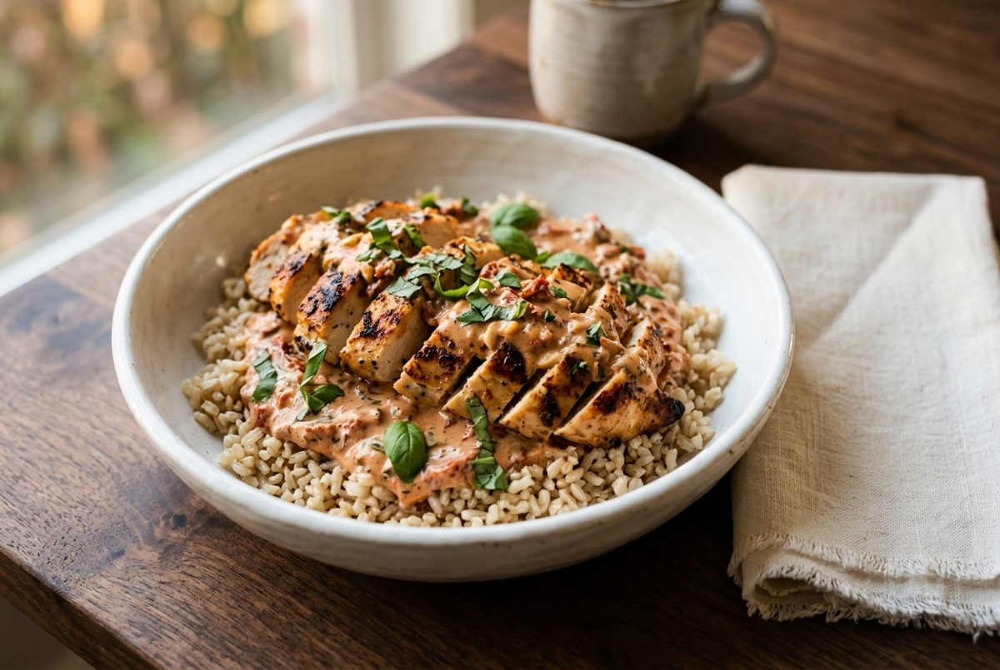
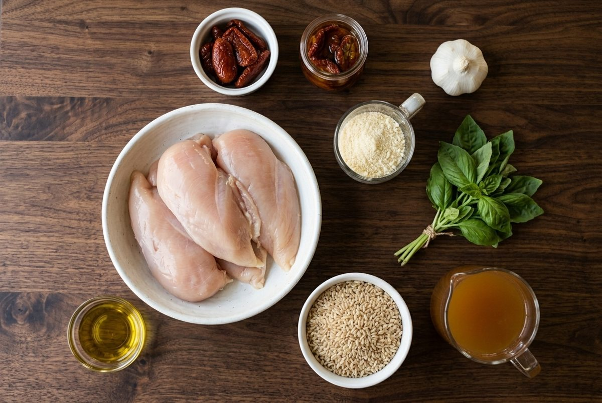
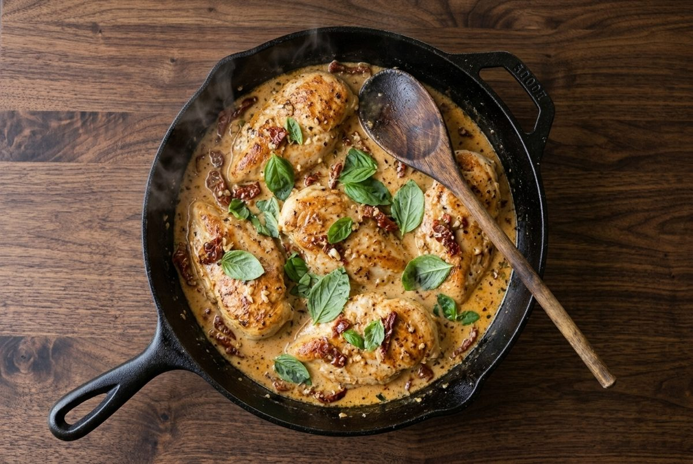
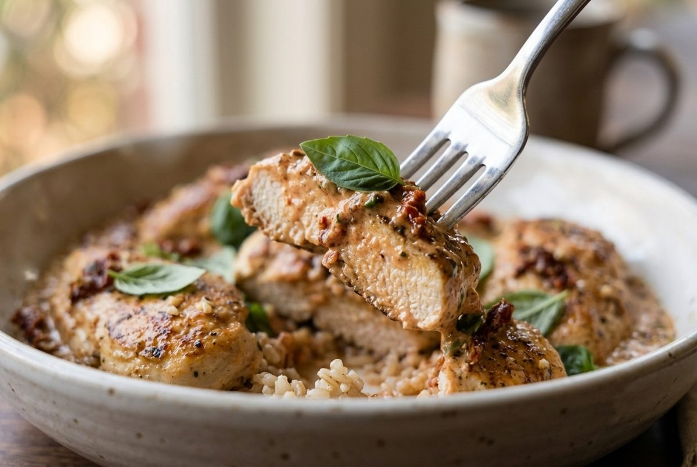
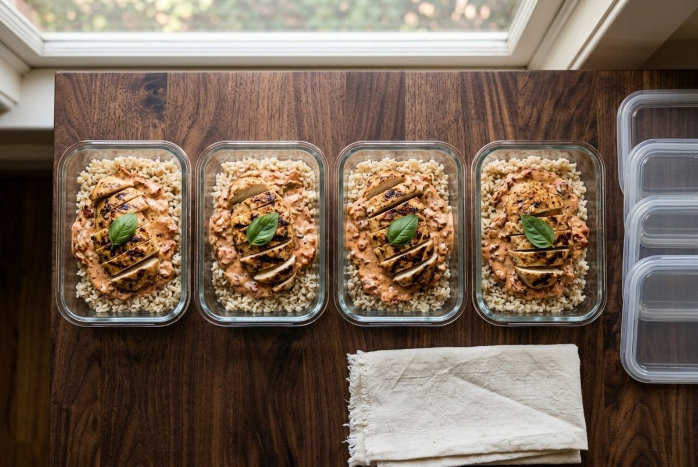

High-Protein "Marry Me" Chicken Meal Prep (40g+ Protein, 40 Minutes)
Per serving (1 container). Nutrition is an estimate and varies with brands.

Marry me chicken is the creamy, garlicky sun-dried tomato chicken that took over social media. This version keeps the comfort and cuts the heavy cream, so each serving lands at 48g protein and 500 calories.
It is a strong choice for high-protein meal prep for weight loss. The sauce stays creamy through the week, and the brown rice keeps you full until dinner.
Light cream cheese and parmesan make the sauce silky without cream. If you like it richer, stir in an extra spoonful of parmesan.
Ingredients

- 1.5 lb (680g) boneless skinless chicken breasts (about 4 breasts)
- 1 cup (190g) uncooked brown rice
- 1 tbsp (15ml) olive oil
- 4 cloves garlic, minced
- 1/3 cup (50g) sun-dried tomatoes, drained and chopped
- 1 cup (240ml) low-sodium chicken broth (stock)
- 1/3 cup (80g) light cream cheese (low-fat soft cheese)
- 1/4 cup (25g) grated parmesan
- 1/2 tsp salt
- 1/2 tsp black pepper
- 1/4 cup (10g) fresh basil leaves, torn, divided
Instructions
- Cook the brown rice following the package directions, about 30 minutes. Start this first so it finishes with the chicken.
- Pat the chicken dry and season with the salt and pepper. Heat the olive oil in a large skillet over medium-high heat. Sear the chicken for 4 minutes per side until golden. Move it to a plate.
- Lower the heat to medium. Add the garlic and sun-dried tomatoes and cook for 1 minute. Pour in the broth and scrape up the browned bits from the pan.
- Stir in the cream cheese and parmesan until the sauce is smooth. Return the chicken to the pan, spoon sauce over it and simmer for 8 to 10 minutes, until the chicken reaches 165°F (74°C).

- Stir in half the basil. Slice the chicken.
- Divide the rice, chicken and sauce across 4 containers. Top with the remaining basil.

Meal Prep, Storage and Reheating

- Fridge: keeps for 4 days in airtight containers.
- Freezer: freezes for up to 2 months. The sauce may separate a little, so stir it well while reheating.
- Reheat: microwave for 2 to 3 minutes with a splash of broth or water.
- Basil: add fresh leaves after reheating for the best color.
Quick Questions
Can I use chicken thighs? Yes. Use the same weight of boneless skinless thighs and cook them a few minutes longer.
Can I make it without cream cheese? You can use 1/2 cup (120ml) half-and-half (single cream) instead. It adds a little more fat.
Where does the name come from? The sauce is so good that people joke it would earn you a proposal.